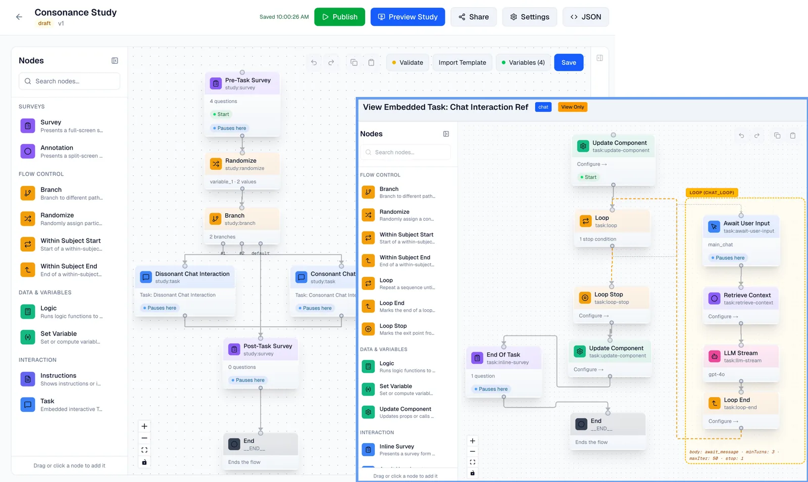
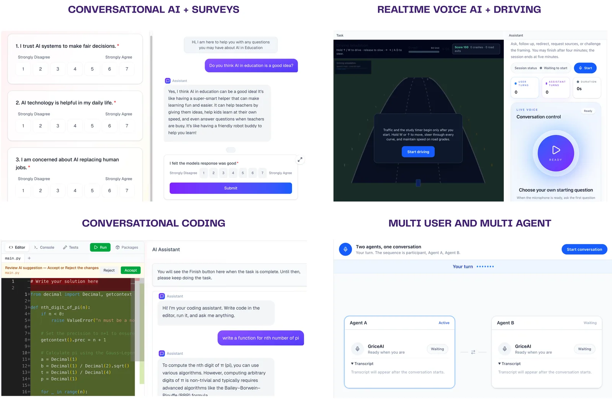
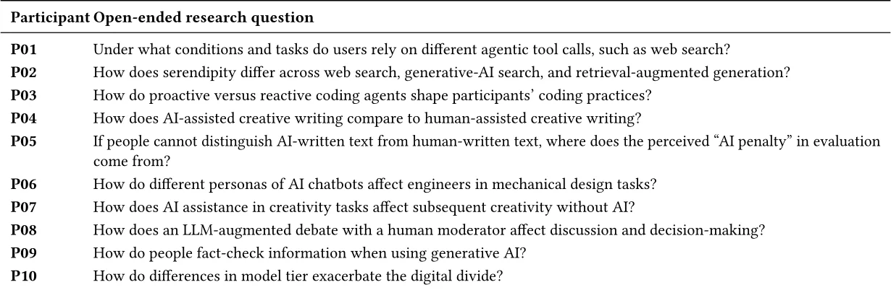

O problema da reprodutibilidade em pesquisa com IA conversacional
Sistemas de IA conversacional — chatbots baseados em modelos de linguagem — estão se tornando infraestrutura cotidiana para busca de informação, comunicação e trabalho. Entender como esses sistemas afetam comportamento humano, confiança e tomada de decisão exige estudos empíricos controlados, onde pesquisadores manipulam aspectos do design (prompts, modelos, interface) e observam os efeitos nos participantes.
Mas há um problema: quando outro pesquisador tenta reproduzir ou estender um estudo publicado, frequentemente faltam peças essenciais. O texto do prompt exato, a configuração do modelo, o fluxo da interface, as perguntas dos questionários — tudo isso fica fragmentado em código, configurações e materiais suplementares que raramente são preservados de forma completa. Sem essas informações, é impossível saber se diferenças nos resultados vêm de mudanças intencionais no design ou de detalhes não documentados.
Esse gap entre relatar um estudo em um paper e preservar a informação necessária para reproduzi-lo impede a construção cumulativa de conhecimento. Cada novo pesquisador precisa reconstruir o experimento do zero, sem garantia de que está replicando fielmente as condições originais. É como tentar seguir uma receita que lista os ingredientes mas omite as quantidades e o tempo de forno.
A proposta: estudos como artefatos executáveis
Gricea é uma plataforma que representa estudos sobre IA conversacional como artefatos de pesquisa configuráveis e executáveis. Em vez de apenas descrever o método em texto, os pesquisadores constroem o estudo inteiro dentro da plataforma — procedimento, interface, configuração do agente, tarefas conversacionais — e esse artefato completo pode ser inspecionado, executado, compartilhado e reutilizado por outros.
A ideia central é que o estudo executável se torna parte do registro metodológico, ao lado do paper. Outro pesquisador pode abrir o artefato, ver exatamente como o agente foi configurado, quais prompts foram usados, como a interface funcionava, e então decidir o que manter e o que variar em um novo experimento. Isso reduz drasticamente o custo de reprodução e extensão, porque o ponto de partida é o próprio sistema funcionando, não uma descrição textual dele.
Os autores, da Johns Hopkins University, desenvolveram Gricea depois de uma análise formativa de papers sobre IA conversacional, identificando os elementos que variam entre estudos: modelos, prompts, retrieval-augmented generation (RAG), interface, fluxo de tarefas, atribuição de condições, timing e medidas. A plataforma organiza esses elementos em uma representação compartilhada que funciona tanto para pesquisadores quanto, potencialmente, para agentes de IA que possam interpretar e construir sobre estudos anteriores.

Study Flow e Task Flow: a estrutura metodológica
Gricea organiza um estudo em duas camadas conectadas: Study Flow e Task Flow. O Study Flow define o procedimento experimental completo — a sequência de etapas que um participante atravessa, incluindo consentimento, instruções, tarefas conversacionais, questionários e debriefing. É o esqueleto do experimento, análogo ao que você descreveria na seção de método de um paper.
Cada tarefa conversacional dentro do Study Flow é definida por um Task Flow independente, que especifica o pipeline do agente: qual modelo de linguagem, quais prompts de sistema, se há RAG (recuperação de informação para fundamentar respostas), quais ações o participante pode realizar, modalidade (texto ou voz), e como a conversa progride. Essa separação é metodologicamente importante: permite que você varie aspectos da tarefa (trocar o modelo, mudar o prompt) sem reconstruir todo o procedimento do estudo.
A plataforma suporta configurações complexas: múltiplos agentes em uma mesma conversa, interfaces customizadas (chat com código editável, interação por voz durante uma tarefa de direção simulada, surveys integrados), atribuição de condições entre participantes, e versionamento de configurações. Tudo isso fica preservado no artefato, incluindo não apenas as escolhas explícitas do pesquisador mas também os defaults que não foram alterados — porque esses defaults também fazem parte das condições experimentais.

Replicando papers publicados: o teste de expressividade
Para avaliar se Gricea consegue representar estudos reais além daqueles usados para informar seu design, os autores tentaram replicar todos os 29 papers com estudos empíricos publicados no CUI 2026 (Conference on Conversational User Interfaces). A pergunta era: a plataforma fornece os recursos necessários para implementar esses designs publicados?
Resultado: 27 dos 29 estudos foram replicados, sendo 10 completamente (configuração completa do estudo) e 17 parcialmente (porções conversacionais, quando materiais externos ou hardware específico impediam replicação total). Isso demonstra que Gricea suporta uma ampla gama de designs: manipulações de prompt, comparações de modelos, conversas de role-play, avaliações com mídia fixa, sessões repetidas, tarefas de fala versus digitação.
Mas o achado mais revelador veio das lacunas de informação. Em 28 dos 29 papers — 96% —, os autores encontraram informações incompletas ou materiais indisponíveis que impediriam uma replicação fiel. Textos de questionários, prompts exatos do agente, inputs de grounding (a informação usada para fundamentar as respostas), materiais de estímulo: tudo isso estava frequentemente ausente ou descrito de forma vaga, mesmo em papers que passaram por peer review.
Teste de usabilidade: pesquisadores construindo seus próprios estudos
Além da replicação, os autores conduziram um estudo de usabilidade onde pesquisadores e praticantes de IA, com backgrounds diversos, usaram Gricea para implementar suas próprias questões de pesquisa. Cada participante recebeu treinamento, depois teve tempo para construir um estudo endereçando uma questão que eles mesmos definiram.
Os participantes implementaram uma variedade impressionante de designs: comparações de modelos para tarefas de raciocínio, estudos sobre viés em recomendações de carreira, efeitos de personalidade do agente em persuasão, impacto de hedging linguístico (expressões de incerteza) em confiança, agentes para suporte a saúde mental, sistemas de tutoria, e muito mais. Essa diversidade demonstra a expressividade da plataforma — ela não força um único tipo de estudo, mas acomoda diferentes procedimentos, interfaces, modelos e medidas.

O que os usuários valorizaram e onde travaram
Os participantes do estudo de usabilidade destacaram recursos que facilitam não apenas a autoria individual, mas a construção sobre trabalho anterior: versionamento (para rastrear mudanças), inspectabilidade (ver exatamente como outro estudo foi configurado), templates (pontos de partida para designs comuns), e links compartilháveis. Esses recursos estendem o valor da plataforma além da conveniência individual — eles tornam o método mais fácil de auditar e interpretar.
Mas também houve fricções. Alguns participantes tiveram dificuldade com a distinção conceitual entre Study Flow e Task Flow, especialmente ao tentar passar dados entre etapas. Outros queriam mais controle sobre o comportamento do agente (como forçar certos tipos de resposta em momentos específicos) ou sobre a lógica de ramificação do procedimento (condições mais complexas para determinar qual etapa vem a seguir).
A interface de configuração de prompts e RAG, embora poderosa, exigiu curva de aprendizado. Participantes sem experiência técnica conseguiram construir estudos válidos, mas levaram mais tempo e precisaram de mais suporte. Isso aponta para uma tensão de design: quanto mais controle você oferece, mais complexa a interface fica. Os autores reconhecem que equilibrar expressividade e usabilidade permanece um desafio.

Por que questões relacionadas exigem configurações inspecionáveis
Um insight importante dos autores é que estudos endereçando questões de pesquisa relacionadas frequentemente implementam condições experimentais substancialmente diferentes. Por exemplo, dois estudos sobre incerteza e confiança: um comparou modelos e prompts durante conversas de planejamento de viagem; outro manipulou hedging linguístico e friction de decisão em conselhos financeiros com alocação explícita de recursos.
Além do modelo subjacente, esses estudos diferem em atribuição de condições, progressão conversacional, ações disponíveis e operacionalização de confiança. Sem preservar as configurações em uma representação compartilhada, é difícil para pesquisadores subsequentes identificar quais partes manter e quais variar ao investigar uma hipótese relacionada.
O mesmo vale para estudos sobre contato conversacional com outgroups (grupos externos). Trabalhos anteriores compararam diálogo individual com um chatbot expressando perspectiva vegana versus ensaio estático, e diálogo em grupo mediado por facilitador com agente fundamentado em discussões de membros do outgroup versus documento com esse material. Ambos investigam consequências de exposição interativa a perspectiva de outgroup, mas diferem em quem participa, de quem é a perspectiva, como mensagens são compostas, e como mudança de atitude é medida. Preservar configurações em artefato compartilhado permite comparar operacionalizações e desenhar estudos subsequentes que retenham ou variem aspectos específicos.
Limitações e o que fica em aberto
Gricea não resolve todos os problemas de reprodutibilidade. A plataforma não pode preservar modelos de linguagem que mudam ao longo do tempo (quando você usa APIs comerciais, o modelo por trás do endpoint pode ser atualizado). Ela também não captura contexto social ou organizacional que pode afetar como participantes interpretam tarefas — elementos que vão além da configuração técnica.
O estudo de replicação focou em papers de uma única conferência (CUI 2026), e os autores reconhecem que essa amostra pode não representar toda a diversidade de pesquisa em IA conversacional. Estudos que dependem de hardware específico (robôs incorporados, realidade virtual) ou de sistemas externos complexos (plataformas comerciais com APIs proprietárias) ficam fora do escopo atual da plataforma.
A usabilidade para pesquisadores sem background técnico, embora demonstrada, ainda exige investimento de tempo. A curva de aprendizado pode ser uma barreira, especialmente para configurações mais complexas. E a questão de como incentivar a comunidade de pesquisa a adotar uma plataforma compartilhada — mudando práticas estabelecidas de publicação e compartilhamento — permanece em aberto. Tecnologia sozinha não muda cultura acadêmica.
Finalmente, Gricea representa um ponto específico no espaço de design de ferramentas para ciência aberta. Outras abordagens — como notebooks computacionais, containers Docker, ou protocolos de pré-registro — endereçam aspectos diferentes de reprodutibilidade. A questão não é qual ferramenta é melhor, mas como diferentes ferramentas podem se complementar para tornar pesquisa mais transparente e cumulativa.
O que isso significa para pesquisa em IA conversacional
Gricea propõe uma mudança de prática: estudos sobre IA conversacional deveriam ser preservados como artefatos executáveis, não apenas descritos em texto. Isso não substitui o paper — a narrativa, a justificativa teórica, a interpretação dos resultados ainda precisam de prosa. Mas o artefato executável complementa o paper, preservando o que o texto não consegue capturar: a experiência exata do participante, a configuração precisa do sistema, os detalhes que fazem diferença para replicação.
A plataforma reduz o custo de construir estudos customizados, integrando procedimento, interface, configuração de agente e coleta de dados em um único ambiente. Isso pode democratizar quem conduz pesquisa em IA conversacional, reduzindo a barreira de expertise em engenharia. Mas também cria uma base compartilhada para construção cumulativa de conhecimento: estudos podem literalmente construir sobre estudos anteriores, variando aspectos específicos enquanto mantêm o resto constante.
Os números da replicação são um alerta: se 96% dos papers publicados omitem informações essenciais, o problema não é de autores individuais, mas do sistema de publicação. Gricea oferece uma solução técnica — uma forma de preservar configurações — mas a adoção depende de mudanças em incentivos, normas de revisão por pares, e expectativas de transparência. A ferramenta existe; resta ver se a comunidade vai usá-la.
O que fica
- Gricea representa estudos sobre chatbots como artefatos executáveis que preservam configuração completa (prompts, modelos, interface, fluxo), permitindo inspeção e reutilização por outros pesquisadores.
- Replicação de 29 papers do CUI 2026 mostrou que 96% omitem informações essenciais (questionários, prompts exatos, materiais) que impedem reprodução fiel, mesmo após peer review.
- Pesquisadores de backgrounds diversos construíram estudos válidos na plataforma, desde viés em recomendações até suporte a saúde mental, demonstrando expressividade do sistema.
- A plataforma não resolve tudo: modelos que mudam, contexto social e hardware específico ficam fora do escopo, e adoção depende de mudança em práticas acadêmicas estabelecidas.
Paper original: Gricea: An Open Science Platform for Conversational AI Research
Comentários
Nenhum comentário ainda. Seja o primeiro.